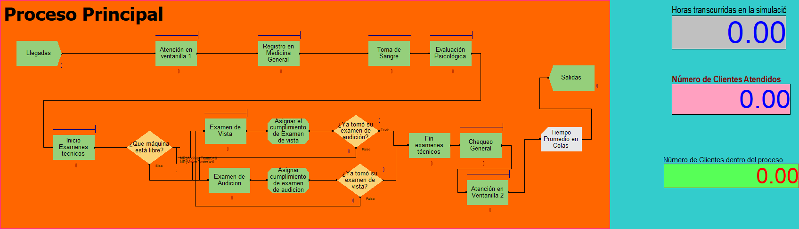
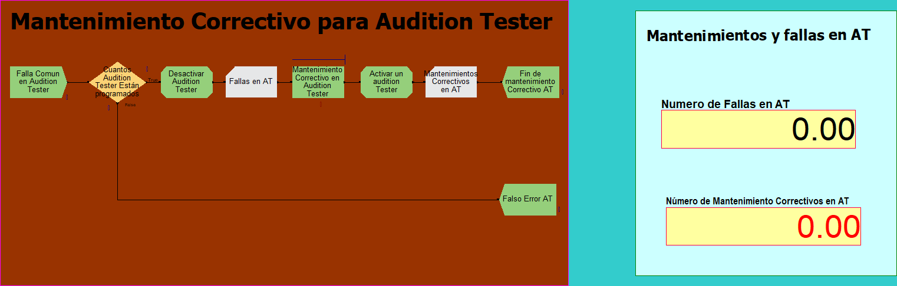
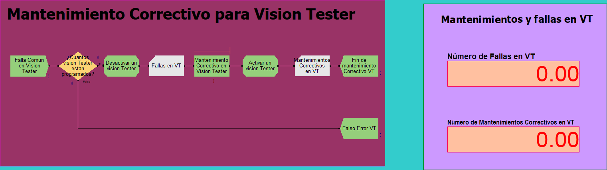
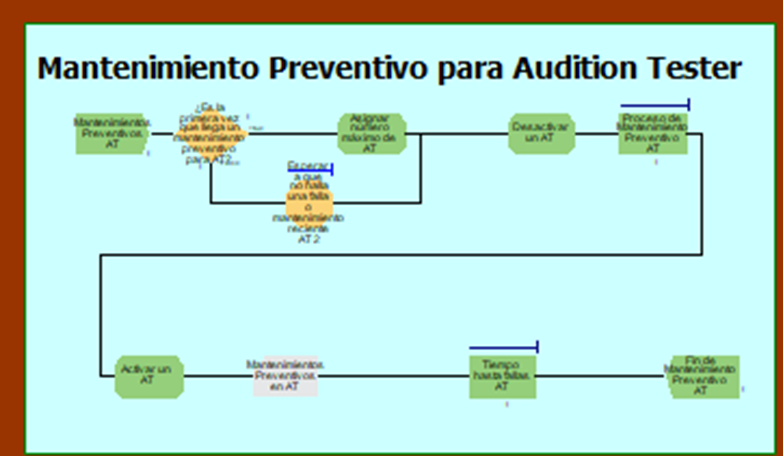
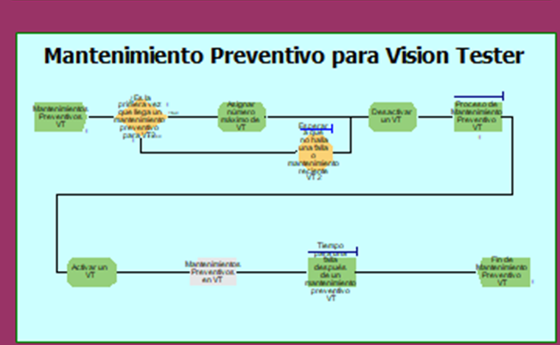
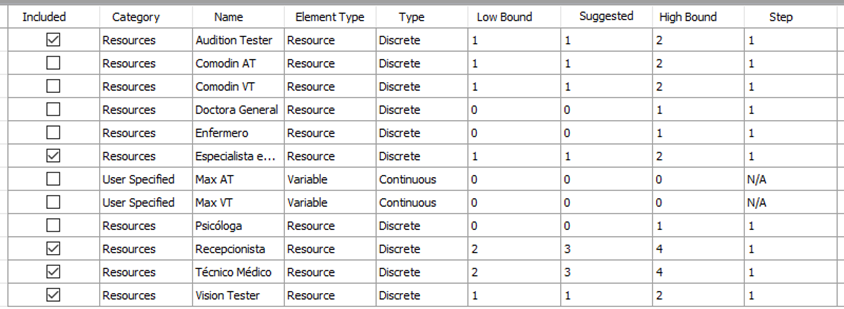
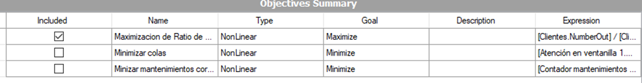
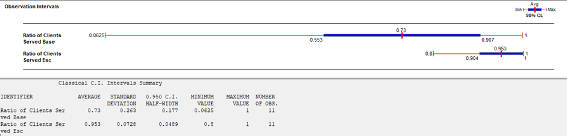
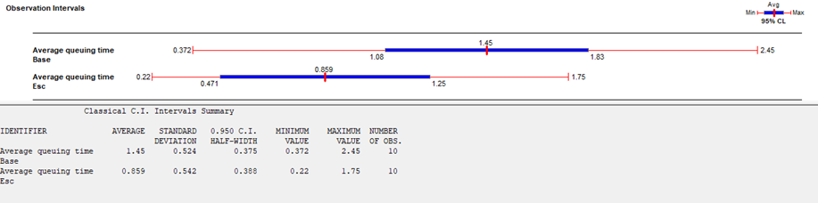
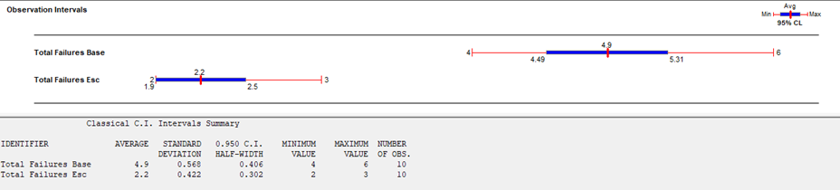

CÍRCULO DE SIMULACIÓN
Simulación y optimización de recursos en servicios de salud
Caso Servimedic con Arena, mantenimiento preventivo y OptQuest
Diego Alonso Chiang Meléndez
Raúl Fernando Ochoa Jara
Arena SimulationOptQuestOutput Analyzer
SIM
+
OPT
01 · EL CASO
El reto operativo
¿Cómo atender a más clientes sin trasladar el riesgo de una mala decisión al sistema real?
El escenario base combina colas prolongadas, capacidad desbalanceada y fallas recurrentes en equipos críticos.
02 · ENFOQUE
Herramientas aplicadas al caso
Arena
Representa llegadas, atención, recursos, decisiones y colas.
MTBF y MTTR
Transforman el historial de fallas y reparaciones en comportamiento simulado.
Mantenimiento
Introduce intervenciones preventivas y continuidad operativa.
OptQuest
Busca una configuración de recursos que cumpla objetivos y restricciones.
Output Analyzer
Compara escenarios mediante promedios e intervalos de confianza.
03 · MODELO AS-IS
El proceso de evaluación médica
Ingreso
Llegada y ventanilla
Registro
Medicina general
Evaluaciones
Sangre y psicología
Exámenes técnicos
Audition y Vision Tester
Cierre
Chequeo y salida
Demanda variableLas llegadas cambian durante la jornada
Recursos compartidosLa capacidad no siempre acompaña la demanda
Equipos críticosUna falla interrumpe parte del circuito
04 · ARENA
Modelo principal AS-IS

Entidades: clientesRecursos: personal y equiposSalidas: atención, colas y clientes en proceso
05 · FALLAS
Procesos secundarios del AS-IS
Audition Tester

Vision Tester

06 · ENTRADAS
Qué datos necesita la simulación
λ
Demanda
Patrón de llegadas por jornada y variabilidad entre clientes.
t
Tiempos de servicio
Duración de cada estación y distribución observada.
R
Recursos
Turnos, disponibilidad, capacidad y reglas de asignación.
μ
Confiabilidad
MTBF para el intervalo entre fallas y MTTR para el tiempo de reparación.
Datos reales+distribuciones+reglas operativas=modelo ejecutable
07 · DIAGNÓSTICO
Qué reveló el escenario base
Programación de recursos
La asignación del personal no acompaña la demanda y genera capacidad ociosa en unas etapas y colas en otras.
Herramienta: OptQuestFallas en equipos médicos
Los correctivos del Audition Tester y Vision Tester reducen disponibilidad durante la jornada.
Herramienta: mantenimiento preventivo3.2 clientes no atendidos por díaS/ 480 de pérdida diaria estimadaBrecha de 20 min frente al tiempo de referencia
08 · INTERVENCIÓN
Diseño del escenario TO-BE
Respuesta correctiva
- El equipo falla durante la operación
- El recurso se desactiva sin programación
- La cola absorbe la interrupción
TO-BE
Intervención preventiva
- La lógica revisa la antigüedad del mantenimiento
- El recurso se desactiva temporalmente
- El equipo vuelve al flujo operativo
09 · MANTENIMIENTO
Procesos secundarios del TO-BE
AT Modelo en Arena

Flujo resumido
Audition Tester Sí No1Inicio / revisar
programación
programación
2Validar AT activo:
¿nunca tuvo correctivo o
último mantenimiento
≥ 100 min?
¿nunca tuvo correctivo o
último mantenimiento
≥ 100 min?
3Esperar
100 minutos
100 minutos
4Desactivar
AT
AT
5Mantenimiento
preventivo
preventivo
6Activar
AT
AT
7Cerrar
proceso
proceso
VT Modelo en Arena

Flujo resumido
Vision Tester Sí No1Inicio / revisar
programación
programación
2Validar VT activo:
¿nunca tuvo correctivo o
último mantenimiento
≥ 100 min?
¿nunca tuvo correctivo o
último mantenimiento
≥ 100 min?
3Esperar
100 minutos
100 minutos
4Desactivar
VT
VT
5Mantenimiento
preventivo
preventivo
6Activar
VT
VT
7Cerrar
proceso
proceso
10 · OPTQUEST
Por qué entra OptQuest
OPTQUESTsimulation optimization
Una búsqueda guiada sobre un modelo con incertidumbre
Cada combinación de personal y equipos debe ejecutarse en Arena. OptQuest utiliza los resultados anteriores para priorizar nuevas zonas de búsqueda.
Combinaciones factibles→KPIs simulados→Mejor configuración encontrada
11 · BÚSQUEDA
Ciclo Arena–OptQuest
Variables
Personal, equipos y límites discretos
Escenario
OptQuest propone una combinación factible
Arena simula
El modelo estima atención, colas y fallas
KPIs
Los resultados se comparan con los objetivos
Siguiente prueba
El motor decide dónde buscar después
OptQuestaprende de cada corrida
12 · METAHEURÍSTICA
Cómo busca OptQuest
Scatter Search
Combina soluciones buenas y diferentes para generar alternativas prometedoras.
Tabu Search
Usa memoria para evitar ciclos y escapar de óptimos locales.
Factibilidad
Respeta límites, costos y restricciones antes de ejecutar la simulación.
Modelos aproximados
Aprende de las corridas y prioriza zonas donde los KPIs pueden mejorar.
En el caso Servimedic: explora recursos, Arena evalúa el desempeño y OptQuest selecciona la siguiente combinación.
13 · CONFIGURACIÓN
Las pantallas reales de OptQuest
Variables de decisión

Funciones objetivo

14 · FORMULACIÓN
Variables, objetivos y restricciones
Variables discretas
- Recepcionistas
- Técnicos médicos
- Especialista de mantenimiento
- Audition Tester
- Vision Tester
Objetivos
MAXRatio de clientes atendidos
MINTiempo promedio en colas
MINMantenimientos correctivos
Umbrales operativos
>85%clientes atendidos
<45 mindemora en cola
<3fallas por tester
15 · DECISIÓN
Configuración y costos del escenario TO-BE
RecursoEscenario baseTO-BE
Recepción1 TC + 3 MT2 TC
Técnico médico1 TC + 5 MT2 TC
Mantenimiento0 especialistas1 especialista
Equipos1 AT + 1 VT2 AT + 2 VT
OPERACIÓN MENSUAL− S/ 600 / mes
Escenario baseS/ 31,150
Escenario TO-BES/ 30,550
Ahorro anual estimado: S/ 7,200
INVERSIÓN ÚNICA DE IMPLEMENTACIÓNS/ 52,432
1 Vision TesterS/ 15,000
1 Audition TesterS/ 10,000
Personal, capacitación, practicantes y softwareS/ 27,432
Los equipos suman S/ 25,000 y forman parte del presupuesto total.
16 · FINANZAS
Retorno financiero: escenario directo
Ingreso adicional completo
El escenario reconoce los S/ 149,760 anuales generados por tres clientes adicionales al día.
Flujo anualS/ 156,960Ingresos adicionales + ahorro operativo anual de S/ 7,200
Año 0−S/ 52,432Inversión
Año 1S/ 104,528Acumulado
Año 2S/ 261,488Acumulado
Año 3S/ 418,448Acumulado
Año 4S/ 575,408Acumulado
Año 5S/ 732,368Acumulado
Horizonte de 5 años, tasa de descuento del 10% y sin crecimiento ni inflación.
17 · FINANZAS
Retorno financiero: escenario conservador
Margen del 40% sobre los nuevos ingresos
El escenario reconoce un costo de ventas del 60% y conserva S/ 59,904 anuales como margen incremental.
Flujo anualS/ 67,104Margen por ingresos + ahorro operativo anual de S/ 7,200
Año 0−S/ 52,432Inversión
Año 1S/ 14,672Acumulado
Año 2S/ 81,776Acumulado
Año 3S/ 148,880Acumulado
Año 4S/ 215,984Acumulado
Año 5S/ 283,088Acumulado
Incluso con el costo de ventas, la inversión se recupera dentro del primer año.
18 · RESULTADOS
Resultados operacionales
0.730.953
0.0%
de mejora
1.45 h0.859 h
−0.0%
de reducción
4.92.2
−0.0%
de reducción
19 · OUTPUT ANALYZER
Evidencia estadística de los resultados

El promedio aumenta de 0.73 a 0.953. Los intervalos permiten valorar la variabilidad entre réplicas.

El tiempo promedio disminuye de 1.45 h a 0.859 h en el escenario mejorado.

Las fallas comunes disminuyen de 4.9 a 2.2 al incorporar la política preventiva.
20 · TRANSFERENCIA
Dónde puede aplicarse este enfoque
Clínicas
Pacientes, consultorios y equipos compartidos.
Bancos
Ventanillas, turnos y demanda por franja horaria.
Almacenes
Pedidos, estaciones y capacidad de preparación.
Industria
Máquinas, fallas, mantenimiento y producción.
Modelar→Validar→Optimizar→Comparar
OptQuest convierte un modelo de simulación en una herramienta de decisión.
Permite explorar cambios antes de comprometer recursos, interrumpir la operación o asumir riesgos innecesarios.